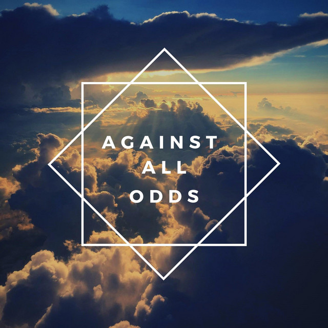

This title reflects Trevor's and Patricia's journey of survival despite the the overwhelming challenges he faces.
It explains Trevor's life experiences,the fact that he is born in a system full of apartheism and being born from
an african mother and a swiss father made his existence illegal.
Throughout his life ,he faces and endures so many issues including,poverty,racism,domestic violence.
Trevor also struggles to find his place in the society considering he is of mixed color
Despite all these struggles,
resistance,hope and resilience remain to be his greatest weapon in overcoming all the setbacks
The title explains his journey of survival and victory ,showing how he rose above all setbacks that many could not survive

Abel wanted a traditional marriage with a
traditional wife… but he never fell in love with subservient women… 'He only wants a woman
who is free because his dream is to put her in a cage.
Thi quote made me understand the painful truth about relationship expectations and the aspect
of patriarchy in both Trevor’s story and the society today.The quote brings out the contradiction that comes from men being
attracted to strong and independent women ,but the moment they start a relationship ,they try to manipulate or rather control
them to fit the traditional gender expectations.Even in today’s world,this is something that is happening .Confident,educated
and successful women who posses all the qualities you can think and admire of ,tend to oftenly get the pressure to “soften”
once they get in a relationship or even marriage ,in the name of “prioritizing the family ,husband and children”. I’ve heard
stories from podcasts,my family and even friends of how their partners were very proud of their independence , ambitions and
self awareness but years into the marriage they expected them to be “traditional” and kept being told the phrase
“you have to start behaving like a wife”. The phrase “you have to start behaving like a wife” makes me question and wonder
how an ideal wife looks,behaves like? Personally, I think independence ,confidence,self awareness and freedom is attractive until
it literally challenges someone’s idea of what a wife should be.And this the description of Abel ,he loved the idea of Patricia being
strong but again felt threatened by the reality of that. This is what led to the control and the violence that is explained in the book.
As a society I think we have a long way to go in defining what an ideal relationship is. Ideal relationships should be growing strong together
rather than growing strong over your wife. It should be about building each other,not harassing one to fit some toxic expectation.
“Today’s man wants a submissive provider not a wife”
.